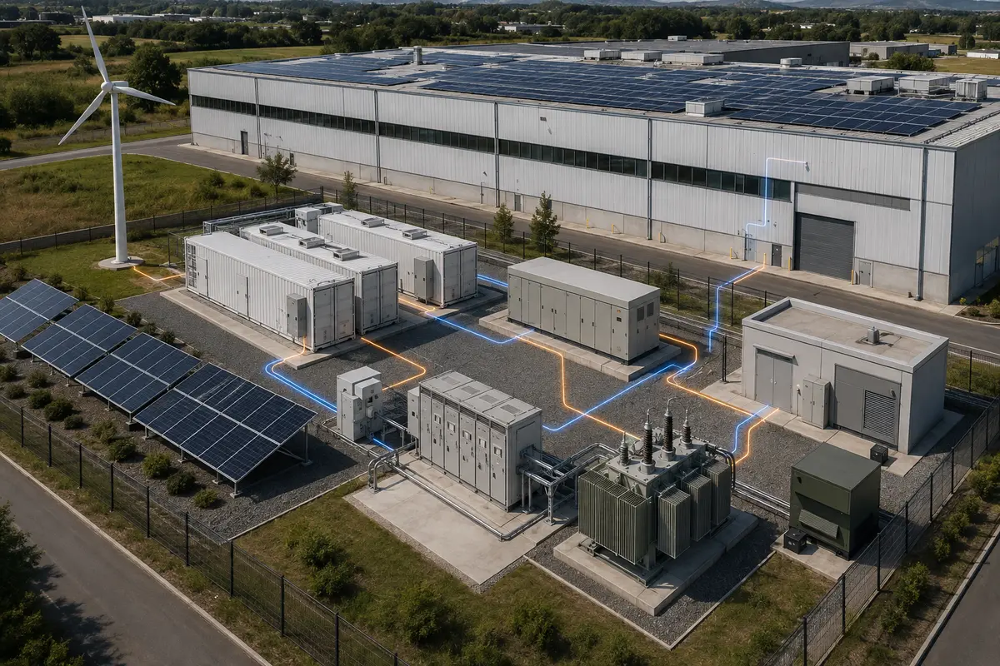
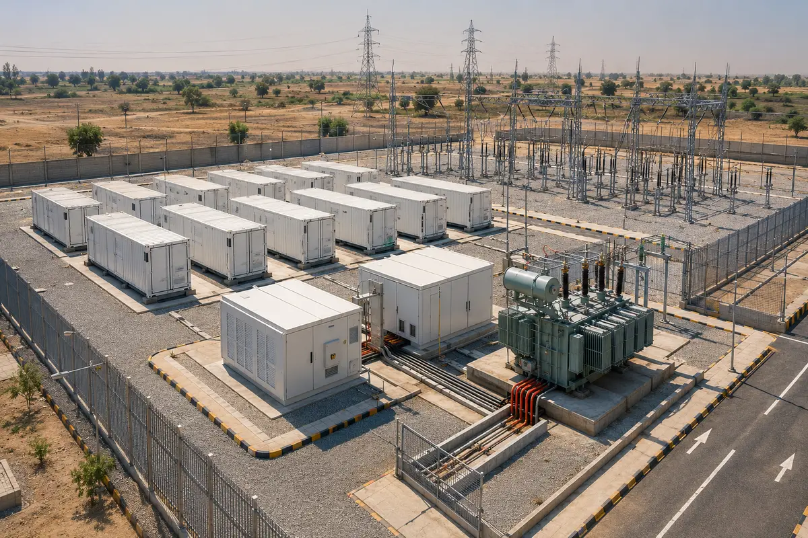
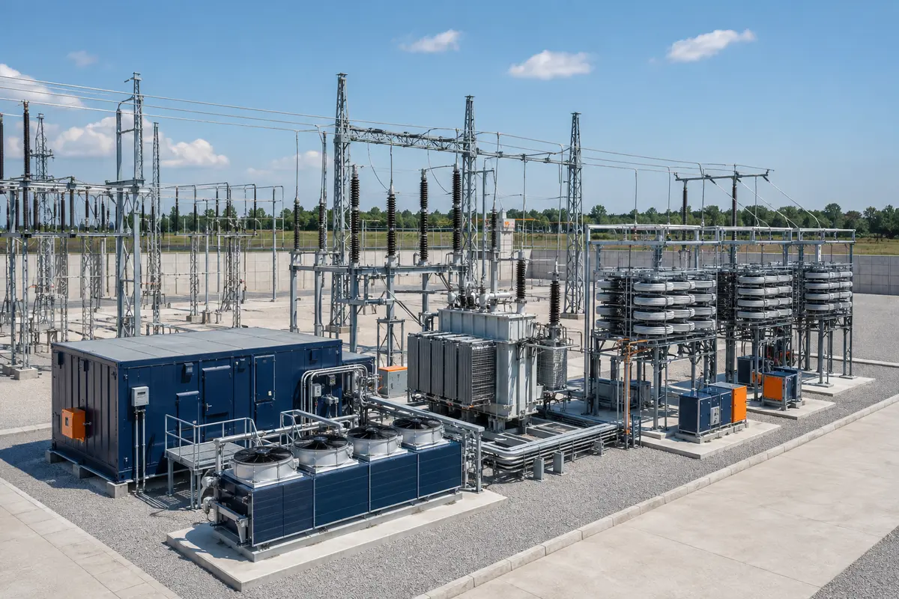
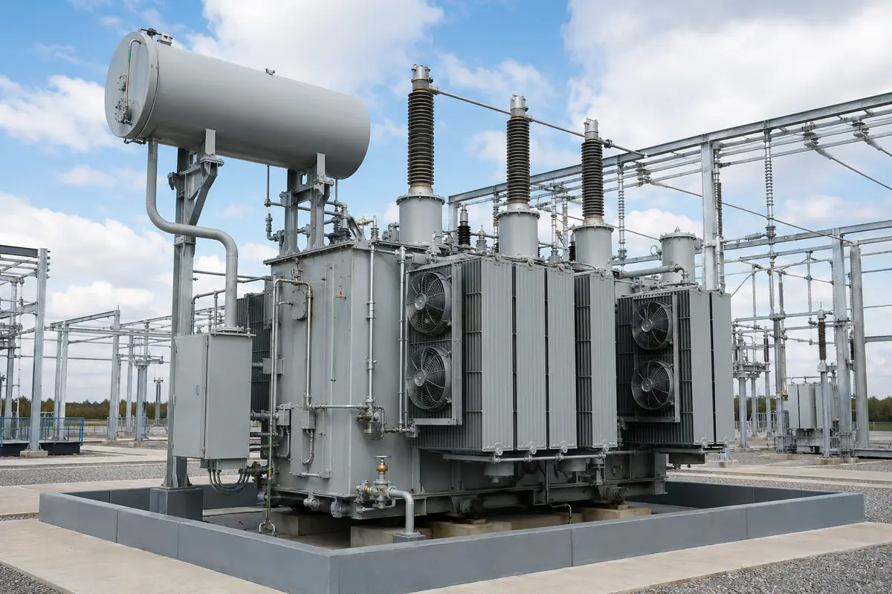
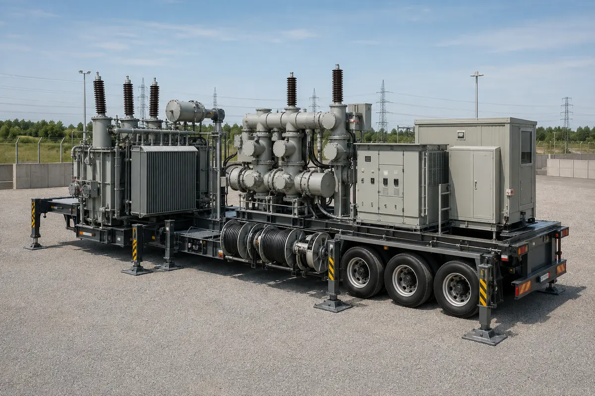
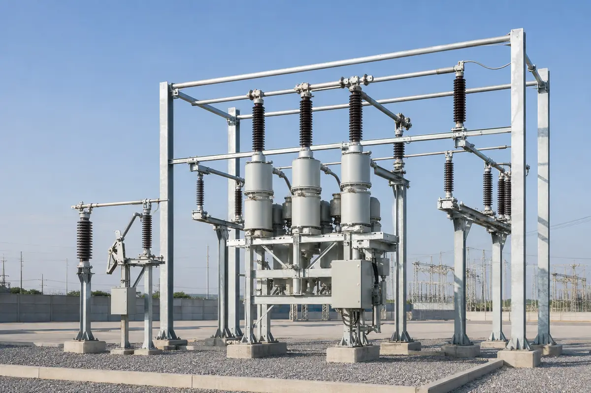
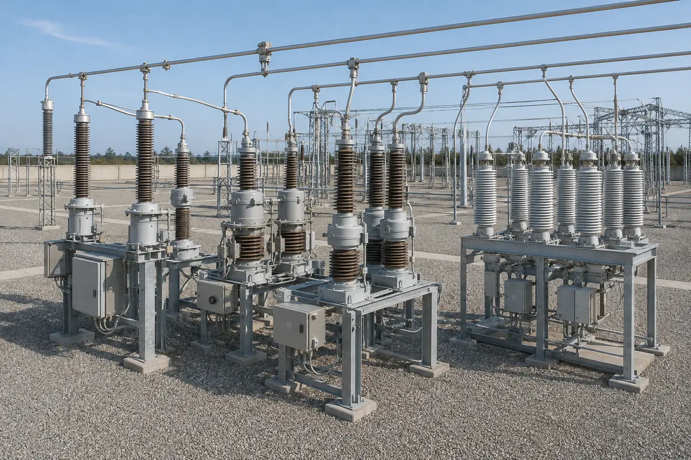
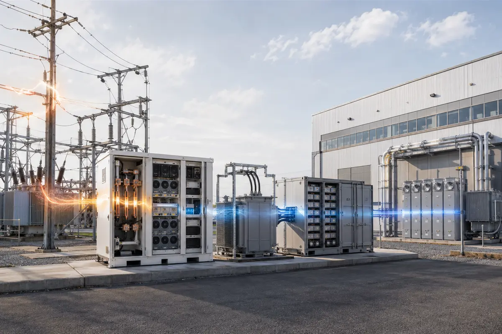

Power equipment.
Understood beyond the catalogue.
Unirazz brings engineering judgement to the selection of BESS, STATCOM, transformers and grid-station equipment—connecting system studies, technical specifications, approved manufacturing relationships and field delivery.

Selection certainty for
critical power equipment.
A compliant datasheet is only the beginning. The equipment must suit the network, duty cycle, climate, protection philosophy, site constraints and long-term operating plan.
Our team studies those interfaces before procurement, develops performance-based requirements, compares deviations on a like-for-like basis and follows the selected solution through drawings, inspection, testing, logistics, installation and commissioning.
Long-standing relationships with leading approved power-equipment brands give Unirazz direct access to current product engineering, factory support and application expertise—while our recommendations remain focused on the client’s technical and commercial objective.
Grid infrastructure.
Seen as a complete system.
Complete aerial views show how high-voltage substations and grid-connected battery storage are planned as integrated systems—not isolated pieces of equipment.

Bankable BESS sizing, integration and procurement.
Unirazz evaluates the complete battery-to-grid chain: cell and pack configuration, racks, battery management system, power conversion system, medium-voltage transformer, energy management system, protection, SCADA and auxiliary loads.
Performance studies
Load profile, renewable curtailment, MW/MWh ratio, C-rate, state-of-charge window, degradation, availability, round-trip efficiency and lifecycle economics.
Grid integration
Load flow, short-circuit contribution, harmonics, reactive capability, voltage/frequency support, high- and low-voltage ride-through, black start and grid-forming control.
Safety by design
Thermal management, pack isolation, smoke/gas/temperature detection, compartmentation, suppression philosophy, emergency response and applicable fire-safety certification.
Delivery assurance
Guaranteed performance schedule, degradation model, spares, warranty, FAT/SAT procedures, commissioning tests and operator training.

Fast voltage control for demanding networks.
Static synchronous compensators continuously generate or absorb reactive power to stabilize voltage, improve power factor and support weak grids, renewable plants, substations and high-fluctuation industrial loads.
Correct Mvar, correct bus
Power-quality measurement, reactive demand, voltage sensitivity, flicker, unbalance, harmonic interaction and contingency assessment define the required rating and connection point.
Dynamic modelling
RMS and EMT simulation for renewable-grid compliance, voltage recovery, fault ride-through, control coordination, oscillation damping and network-equivalent validation.
Primary integration
Coupling transformer or reactor, breaker and disconnector arrangement, grounding, harmonic limits, auxiliary supply, cooling, building or container layout and environmental protection.
Control & reliability
Control modes, SCADA/IEC communication, protection, modular redundancy, bypass strategy, factory testing and response verification at site.

Transformer specifications built around network duty.
We translate the single-line diagram, load forecast and operating philosophy into a transformer specification that is electrically robust, transportable, maintainable and clear enough for meaningful bid comparison.
Electrical design
MVA rating, voltage ratio, vector group, tap range, impedance, insulation level, load/no-load losses, overload duty, neutral treatment and short-circuit withstand.
Thermal & acoustic duty
ONAN/ONAF/ODAF cooling, ambient and altitude corrections, temperature-rise limits, radiator arrangement, fan redundancy and project-specific noise requirements.
Physical interfaces
AIS/GIS/cable terminations, bushings, fire separation, oil containment, online monitoring, marshalling, transport envelope, lifting and final foundation loads.
Quality verification
Design review, guaranteed data, material and accessory approvals, routine/special/type tests, impulse tests, loss measurement, temperature rise, FRA and site acceptance.

Rapid capacity where the network needs it.
Mobile substations restore supply after equipment failure or natural disaster, support reconstruction and load growth, and provide temporary capacity while a permanent grid station is being delivered.
Modular architecture
HGIS/GIS module, mobile transformer, substation automation, medium-voltage distribution, protection, auxiliaries, earthing and trailer or skid platform.
Transport engineering
Route survey, axle and gross weight, turning radius, road height/width limits, centre of gravity, lifting, transport shock, anti-vibration and equipment restraint.
Fast connection
Site-specific primary interfaces, plug-connected secondary cabling, temporary foundations, outgoing feeders, grounding and a commissioning plan designed to minimize outage duration.
Reusable emergency asset
Configurable voltage ratios, cooling, tap changing, cable or GIS interfaces and protection settings allow a mobile solution to serve multiple credible deployment scenarios.

Switchyard equipment selected as one coordinated system.
Unirazz aligns circuit breakers, disconnectors and earthing switches with fault level, insulation coordination, switching duty, bay geometry, protection timing and the maintenance philosophy of the grid station.
Breaker duty
Rated voltage/current, short-circuit breaking and making, first-pole-to-clear factor, capacitive and inductive switching, operating sequence, mechanical endurance and seismic duty.
Isolation philosophy
Center-break, pantograph, knee, vertical-break and neutral-point configurations, with earthing switches, interlocks, motor drives and visible isolation matched to the bay.
Site environment
Altitude, ambient range, wind, pollution class, creepage distance, corrosion category, seismic loading, terminal loads and space constraints.
Verification
IEC duty compliance, type-test review, routine tests, timing and motion analysis, contact resistance, gas or insulation checks, interlocking and trip/close circuit proving.

Measurement accuracy that protection can trust.
Instrument transformers sit between primary power and every protection, metering and control decision. We specify their cores, accuracy, burden, insulation and transient performance around the actual connected devices and fault duty.
Current transformers
Ratios, multi-core allocation, class, burden, knee point, ALF/FS, thermal and dynamic current, transient performance, saturation and relay-specific requirements.
Voltage transformers
Inductive or capacitive technology, ratios and windings, accuracy and burden, ferroresonance, transient response, carrier coupling and secondary circuit protection.
Insulation & environment
Oil or cast-resin insulation, hermetic construction, internal-arc considerations, pollution and creepage, seismic performance, corrosion, temperature and UV exposure.
Tests & documentation
Nameplate and drawing review, routine/type-test evidence, ratio and polarity, excitation, capacitance/tan-delta, partial discharge and secondary terminal verification.

Stable, intelligent power behind the meter.
We integrate utility supply, solar PV, wind, BESS, standby generation and sensitive loads through a coordinated power-management and protection architecture for grid-connected or independent operation.
Microgrid controls
Energy dispatch, source prioritization, spinning reserve, demand management, state-of-charge control, grid/island transitions, synchronization and restoration sequences.
High-quality supply
Voltage-sag depth and duration assessment, sensitive-load segmentation, fast detection, current limiting and grid-forming active/reactive support for industrial continuity.
Protection coordination
Bidirectional fault current, changing network strength, inverter limits, anti-islanding, relay groups, communications, selectivity and safe reconnection.
Commercial optimization
Peak shaving, energy arbitrage, renewable self-consumption, demand-charge control, backup autonomy, fuel displacement and lifecycle cost modelling.
One traceable route
from study to supply.
Every technical decision is connected to the project objective, captured in the tender record and verified before handover.
- 01
Study
Network data, operating cases, site conditions and project economics.
- 02
Specify
Functional requirements, guaranteed values, standards, tests and interfaces.
- 03
Evaluate
Compliance matrix, deviations, lifecycle cost, delivery risk and recommendation.
- 04
Approve
Drawings, calculations, data, materials, accessories and inspection plan.
- 05
Verify
Factory tests, logistics, installation, site tests, energization and training.
Bring us the network challenge.
Share the single-line diagram, system voltage, required capacity, operating objective and target delivery date. We will help define the right study and procurement path.